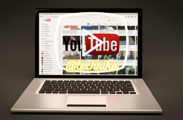

YouTube – Complete Guide: History, Products, Founding, and More

The History of YouTube: What to Know
YouTube (an American online video sharing platform owned by Google) was launched on February 14, 2005 by Chad Hurley, Steve Chen, and Jawed Karim. The founders of Youtube wanted to create an easy way on how people could upload and share videos worldwide. Before YouTube was introduced, there were no reliable sources for one to share videos on the internet. For this reason, the three buddies, Chad Hurley, Steve Chen, and Jawed Karim thought of starting a platform where people could share their beautiful experiences through online videos.
However, YouTube had a hard time getting traffic in the first months after the launch. They uploaded the first video titled “Me at the zoo” featuring Jawed Karim on April 23, 2005. But despite starting low, YouTube has risen to become the best video upload site and the 2nd most visited online site after google.
Before YouTube was founded, other video platforms such as Realplayer, Windows Media Player, Google Video, and ShareYourWorld were available. However, these sites required many processes before uploading videos and were expensive to the users as one was required to pay before sharing videos.
YouTube brought better ways to upload, access, comment, like, and share videos with fewer requirements, unlike the early sites. The three founders started their work at Mellon Park, California, with a dream of building a computer application that would create an efficient way for people to share videos online without complications. Unlike previous video uploading platforms, YouTube grew to become the world’s best video-sharing website.
The Founding of YouTube: How it Happened
YouTube was founded on 14th February 2005 by three former PayPal employees; Steve Chen (Taiwanese-American Internet entrepreneur, born 18 August 1978 in Taipei City, studied at University of Illinois at Urbana-Champaign), Chad Hurley (American webmaster and a businessman, born 24 January 1977 in Reading, Pennsylvania, United States. Studied at Indian University of Pennsylvania), and Jawed Karim (American software engineer and internet entrepreneur, born 28 October 1979 in Merseburg, Germany. Studied at the University of Illinois and Stanford University).
The three YouTube founders were enjoying a dinner party at Steve Chen’s apartment. At this party, Chen and his friend, Chad Hurley spent much of the party shooting videos and digital photos of each other. They easily uploaded the photos to the Web. But the videos? Not a chance.
Realizing that digital photographs were easier to share thanks to new Web sites like Flickr, they reasoned that a similar software package to share videos was possible, too. But, stumbling across a need to publish a video to the Internet, the friends decided to create a video sharing website on which users can upload and share videos. And they had the means to address this need, because Chen was an exceptional code writer, and Hurley’s gift for design could give a new Web site a compelling look.
First, the three founders agreed they should build a user-friendly application for every person, even those with minimal computer skills. They also wanted to design an application that won’t require users to download any unique software tool to upload or view videos. Additionally, they wanted to avoid the need for site visitors to create an account before having access to the shared clips. Finally, the founders wanted to add a quick search feature to find the video archives easily.
Later, the team relocated to a more spacious office situated above a pizzeria and Japanese restaurant in San Mateo, California, to get their plans underway. The YouTube creators did a commendable job as they uploaded their first video (Me at the zoo) on April 23, 2005, and later shared with the public the better part of the site activities in May 2005. Six months later, YouTube was officially launched in November 2005. In the same month, YouTube got US$11.5 million to boost their project.
In 2006, YouTube created a spark in the digital market as it announced over 65000 new videos were uploaded daily and had over 100 million video views every day. In the same year, Google purchased YouTube at the cost of US$1.65 billion. Also, YouTube introduced video ads to the site. Although Chad Hurley first rejected it as he thought it would be inconvenient to its users, YouTube finally accepted pre roll adverts in August 2007. It soon became the dominant online video upload and viewing site with a 43 percent market share and more than 6 billion video views in January 2009. Since then, YouTube has become the best film platform for artists to showcase their knowledge and skills to the world.
YouTube: Through The Decades (2005- 2021)
Decade 1 (2005-2015)
During this timeline, YouTube was created and introduced to the public on February 14, 2005. The first video, “Me at the Zoo,” was uploaded on April 23, 2005, showing Jawed Karim at the San Diego Zoo. During the period, several companies formed a partnership with YouTube starting with Sequoia Capital Firm, which invested $3.5 million, and later Roelof Botha (former Chief Financial Officer of PayPal) joined the YouTube board of directors.
In April 2006, Sequoia and Artis Capital Management gave YouTube a significant boost of $8 million after their outstanding achievements in the first months. In February 2006, YouTube introduced adverts on the site, and the first advert was Prison break by the Fox show. The video ads were a good venture as it produced more funds. In the same year, Google offered to buy YouTube on October 9, 2006. After much consultation, they agreed on a US$ 1.65 deal on November 13.
In a bid to improve users’ experience on the site, YouTube partnered with Verizon Wireless in July 2007 to enable people to submit videos through Multimedia Messaging Services (MMS). In December 2007, YouTube created the partner program to allow users to run ads through their channel and be paid. YouTube further improved its application feature in June 2008 by introducing video annotations where users could add text boxes and speech bubbles to better their content. In April 2009, it launched the HTML5 video player experiments, and in June, YouTube XL was created.
In 2011, YouTube signed an agreement with Google+ social networking and the Chrome web browser to connect to its videos from their platform directly. At first, the only language available on YouTube was English, but in 2012, the number was increased to six European dialects. In October 2012, YouTube broadcast the U.s presidential debate, which created a path for its widely known slogan (Broadcast Yourself) to be shared worldwide.
On December 21st, 2012, one of YouTube videos (Gangnam Style) hit 1 billion views becoming a record-breaking achievement. In February 2015, YouTube created the “YouTube kids” channel to serve children with content suitable for their age.
Decade 2 (2015 – Present Day)
In March 2015, YouTube introduced the “360 – degree video” and allowed its live streaming from April 2015. At the end of 2015 and January 2016, uploads through email and webcam were rejected. YouTube introduced the “heart” and pin feature in November 2016, which allowed the channel owners to have their comment or a favorite one pinned below their videos. Additionally, a watch progress bar was introduced below the videos to show a channel’s previous views in December 2016.
On April 3, 2018, a shooting occurred in the YouTube headquarters, and three people were injured. The shooter was later identified as Nasim Najafi Aghdam. In July 2021, all unlisted videos on YouTube accounts were removed and won’t be available on the channels.
What are The Most Important Inventions from YouTube
Video Sharing Platform
YouTube created the most reliable system where people can share their content online without restrictions. It made a remarkable way for the internet to distribute videos globally. Many people can create beautiful clips and effortlessly share them with the world through the YouTube content creator. Its estimated over 500 hours of video content are uploaded hourly, an exceptional performance never seen in the Internet world.
Monetization
YouTube invented a way people can conveniently earn through their video production. Unlike other digital marketing platforms, YouTube gave a unique chance to its users by introducing YouTube’s Partner Program and Google AdSense. This program allowed content creators to earn as they share their videos and build up their careers through the YouTube app.
How Does YouTube Make Money?
YouTube had reported a profit of around US$15 million before being purchased by Google. Its primary way of making money is through Advertising. YouTube gets into a contract with companies that want to sell their products globally through the site. YouTube does the task of advertisement, and in exchange, the company pays for the service.
Another source of YouTube earning is through Monthly subscription businesses where people and companies pay to be its official partners. Also, YouTube earns from the content creator’s video uploads. It takes 45% of the total earning from the user’s channels.
YouTube Acquisitions
Google bought YouTube for US$1.65 billion in November 2006. After the Google video sharing platform failed, it saw a great opportunity in YouTube and wanted to make its official video uploading site. Google offered to buy YouTube at US$1.65 billion, and in November, a deal was sealed. It was agreed that YouTube will work independently, keeping a separate brand and still own its headquarters in San Bruno. Furthermore, all YouTube employees were to be retained. It is believed that the trio CEO earned between US$100 to US$200.
YouTube Notable Controversies
Trip to Japan in December 2017
In December 2017, there was a famous controversy involving Logan Paul. On his trip to Japan, he toured the Aokigahara, famously known as the “suicide forest.” He filmed a suicide victim and shared it on his YouTube channel. The video was heavily criticized by YouTubers and petitioned to ban Logan Paul’s YouTube channel. Despite the push to remove Logan’s YouTube account, it was never achieved as Paul deleted the video and wrote an apology letter to the relevant authorities.
Podcast controversies in February 2018
Logan Paul tweeted about Tide Pod Challenge, where he removed a fish from his pond and fed it Cardiopulmonary resuscitation (CPR), and electrocuted two dead rats. This led to a move by YouTube to suspend all adverts on Paul’s channel and hold his revenue for a certain period.
What is YouTube?
It is a video uploading site owned by Google that allows users to share and view films through its application.
When was YouTube founded?
YouTube was founded on 14 February 2005. It was officially released to the public in May the same year.
Who founded YouTube?
Three PayPal employees founded YouTube; Steve Chen, Chad Hurley, and Jawed Karim.
What is YouTube known for?
YouTube is the best video-sharing platform globally known for easy uploading and viewing of worldwide films.
Who owns YouTube?
YouTube was first owned by Steven Chen, Chad Hurley, and Jawed Karim but later sold it to Google for US$1.6 billion.
How much is YouTube worth?
Currently, YouTube is worth US$500, and there are possibilities for further growth.
Who was the first YouTuber?
The first YouTuber was Jawed Karim, who featured in a video titled “Me at the zoo” and is still available on the site today.